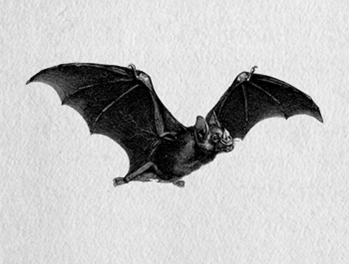

| Mağara | Bölge | Derinlik | Harita |
|---|---|---|---|
| Sukırıldığı 1 Düdeni | Taşeli Platosu | -228 m | Aç |
| Yukarı Katırgölleri Düdeni | Munzur Dağları | Veri hazırlanıyor | Beklemede |
| Pınargözü Mağarası | Dedegöl Dağı | Veri hazırlanıyor | Beklemede |
| Gidilmez Mağarası | Taşeli Platosu | Veri hazırlanıyor | Beklemede |
| Derme 2 Düdeni | Burmahan | Veri hazırlanıyor | Beklemede |